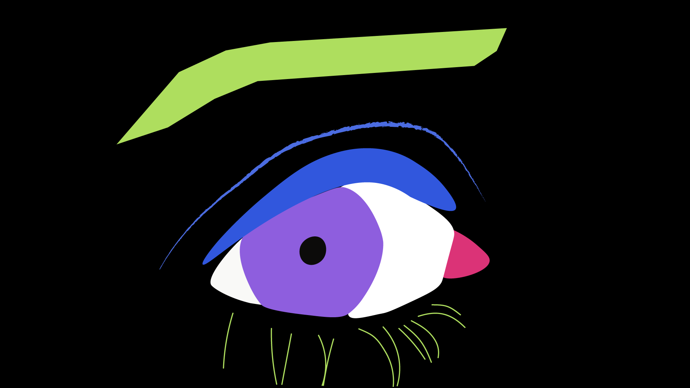
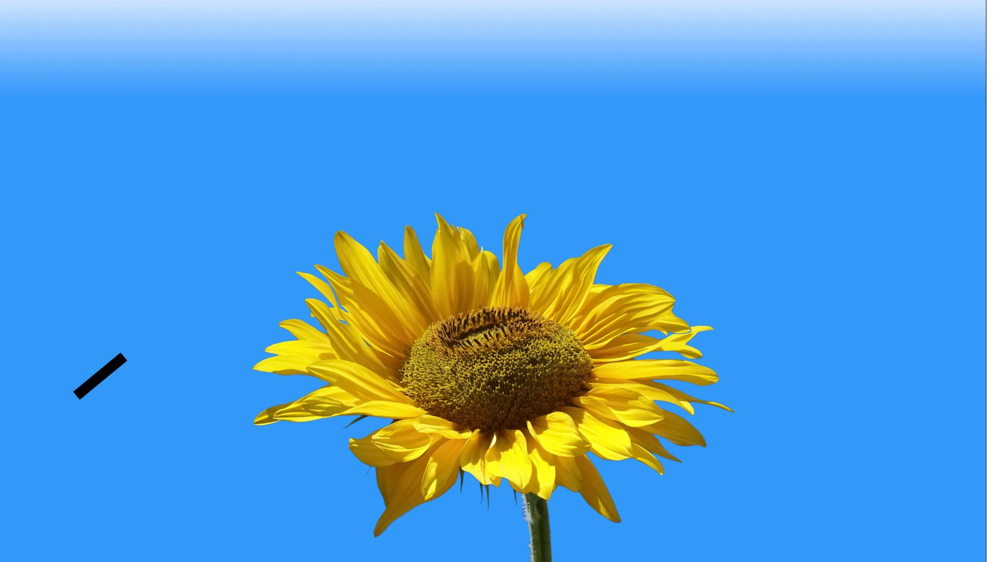

reflection:
For this assignment. I removed the eyelashes of the upper lid from the original illustration. This simpler eye provided a clear space for the new eyelid to be manipulated for the blinking animation. The lab demonstration communicated the closing and opening of the eye can be represented by an enclosed shape at different levels of expansion. The eyelid consisted of different triangular shapes with rounded corners. Adobe Illustrator’s Curvature tool allowed me to depict a sense of the lid covering over the eyeball. At each stage of the blink, I saved the image of it when exporting for web. Before pasting the images into Photoshop, I changed the Window settings of the Workspace to “Motion” with “Timeline” turned on. By sequencing the closing of the eye into four progressive stages, it was easy for me to reincorporate the images into Photoshop. To finish the blinking action, I duplicated the layers and organized them to show the eye opening back. Next, I converted the layers to smart objects to accurately convert the layers into frames. This detail proved to be important, because without it, the layers resulted into one frame on the timeline. Finally, the blinking gif was created by changing the loop count to “Forever” and setting the frame delay to .1 second.
The second gif of the sunflower and bee was done with Photoshop's Puppet Warp tool and Adobe Illustrator. The intent was to mimic how some plants, such as the sunflower, face toward and follow the sun during the day. For the background I changed the blue sky in the photograph to a blue to white linear gradient to invoke a flower being under harsh direct sunlight. The image of sunflower I chose is turned up and by using the object selection and puppet warp tools I was able to change where the plant disk floret is facing. In the mesh, I placed three pins in the disk in a triangular shape, on the petals, and moved them for each pose in the animation. Through this homework, the placement of the pins in the mesh with the right combination of warp mode was the most difficult step for me. I added the bee emoji and drawn beeline in illustrator and as a result, needed additional frames per flower pose. The last step was setting the frame delay to .2 seconds per frame.
{kind=link}